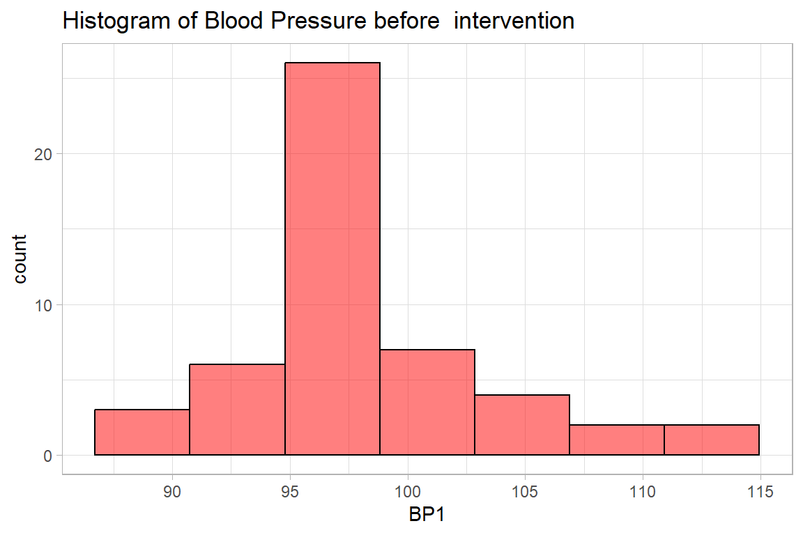
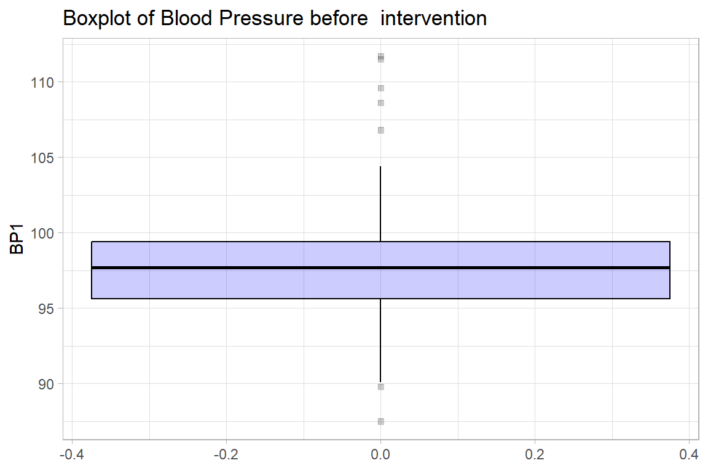
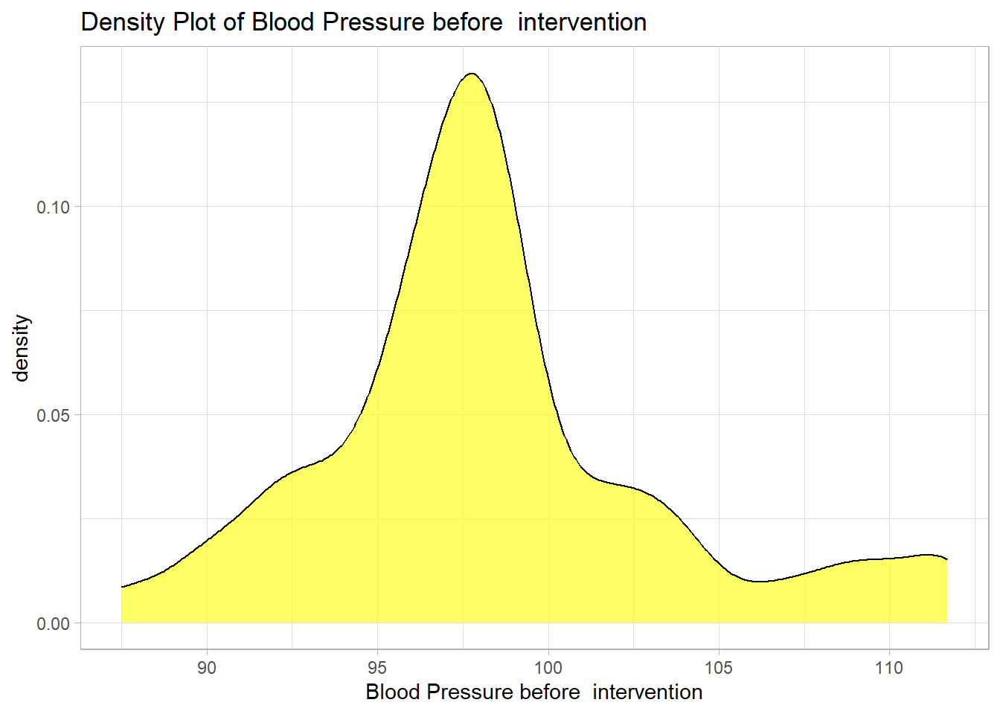
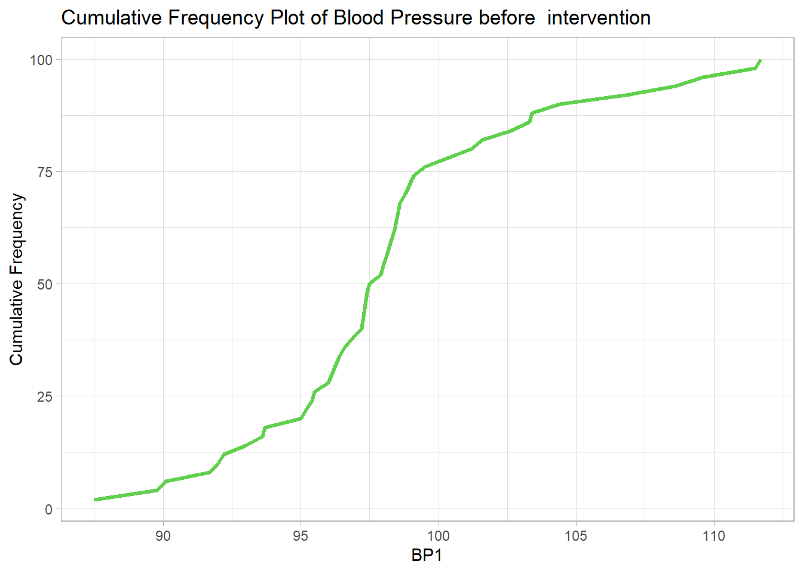
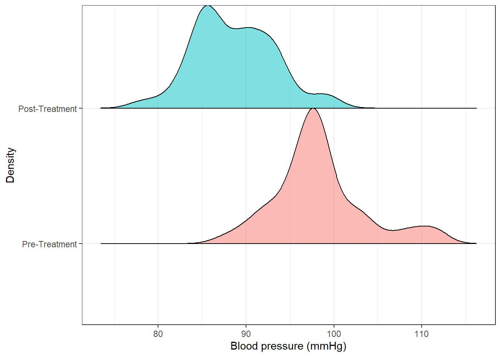
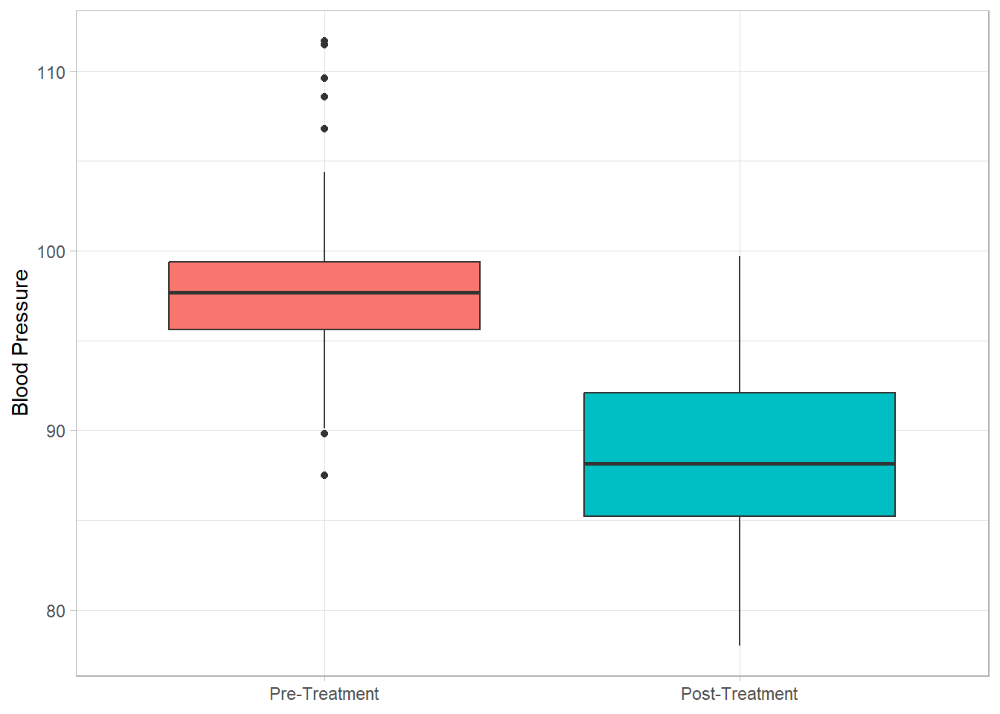
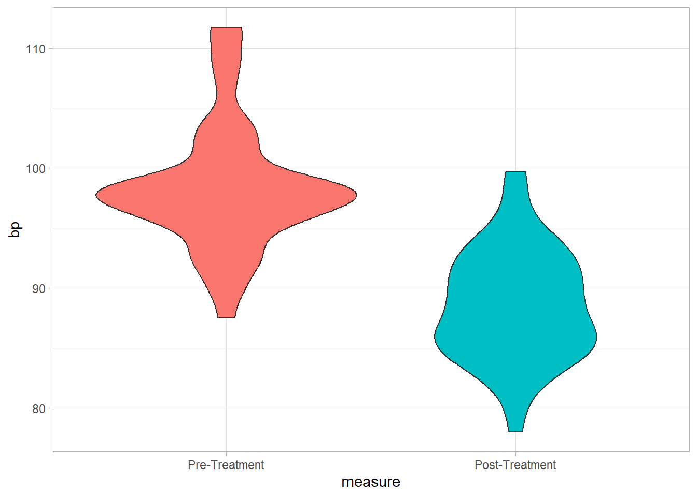
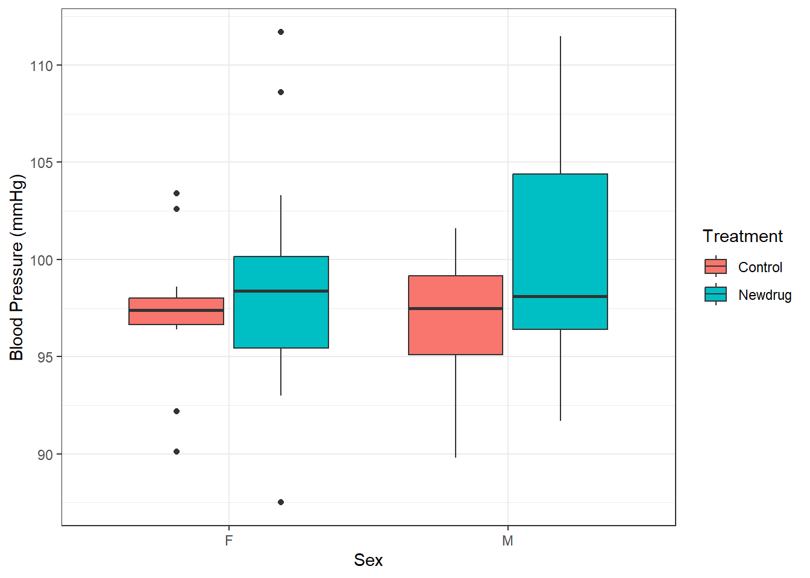

id treat age sex bp1
Length:50 Control:22 Min. :45.00 F:26 Min. : 87.50
Class :character Newdrug:28 1st Qu.:57.25 M:24 1st Qu.: 95.62
Mode :character Median :63.00 Median : 97.70
Mean :61.48 Mean : 98.30
3rd Qu.:65.00 3rd Qu.: 99.40
Max. :75.00 Max. :111.70
bp2 bpdiff
Min. :78.00 Min. : 0.500
1st Qu.:85.22 1st Qu.: 4.800
Median :88.15 Median : 8.250
Mean :88.60 Mean : 9.704
3rd Qu.:92.10 3rd Qu.:13.700
Max. :99.70 Max. :26.300 8 Descriptive Statistics: Continuous
The initial analysis of numeric data is usually a description of the data at hand without making inference to the population from which the data was drawn. This gives the data analyst a general overview of the data at hand, how best to describe it and what analysis best suits it. In descriptive analysis of numeric data the most basic is to determine the:
- Measure of Central Tendency: This is a description of the center of the data. These measures include mean, median and mode.
- Measure of Dispersion: A measure of how widespread the data is. These include standard deviation, variance, interquartile range and range.
For this section, we will use the NewDrug_clean.dta dataset
8.1 Single continuous variable
8.1.1 Measures of Central Tendency & Dispersion
Below we determine the mean, median, standard deviation, range (minimum, maximum) and interquartile range of out initial blood pressure
Code
newdrug %>%
summarise(
Mean = mean(bp1),
Median = median(bp1),
Standard_Dev = sd(bp1),
Minimum = min(bp1),
Maximum = max(bp1),
IQR = IQR(bp1)) # A tibble: 1 × 6
Mean Median Standard_Dev Minimum Maximum IQR
<dbl> <dbl> <dbl> <dbl> <dbl> <dbl>
1 98.3 97.7 5.17 87.5 112. 3.78Alternatively, the psych package gives these measures in further details. The output includes a measure of the Kurtosis and Skewness, both describing the shape of the data.
Code
newdrug %$%
psych::describe(bp1) vars n mean sd median trimmed mad min max range skew kurtosis se
X1 1 50 98.3 5.17 97.7 97.89 2.97 87.5 111.7 24.2 0.7 0.62 0.73And to show the interquartile range we do the following.
Code
newdrug %$%
psych::describe(bp1, IQR = TRUE,quant = c(.25, .75)) vars n mean sd median trimmed mad min max range skew kurtosis se
X1 1 50 98.3 5.17 97.7 97.89 2.97 87.5 111.7 24.2 0.7 0.62 0.73
IQR Q0.25 Q0.75
X1 3.78 95.62 99.48.1.2 Graphs - Histogram
Code
newdrug %>%
ggplot(aes(x = bp1)) +
geom_histogram(bins = 7, col="black", alpha = .5, fill = "red") +
labs(
title = "Histogram of Blood Pressure before intervention",
x= "BP1")+
theme_light()
8.1.3 Graphs - Boxplot and violin plot
Code
newdrug %>%
ggplot(aes(y = bp1)) +
geom_boxplot(col="black",
alpha = .2,
fill = "blue",
outlier.fill = "black",
outlier.shape = 22) +
labs(
title = "Boxplot of Blood Pressure before intervention",
y = "BP1")+
theme_light()
8.1.3.1 Graphs - Density plot
Code
newdrug %>%
ggplot(aes(y = bp1)) +
geom_density(col="black", fill = "yellow", alpha=.6) +
labs(
title = "Density Plot of Blood Pressure before intervention",
y = "Blood Pressure before intervention")+
coord_flip() +
theme_light()
8.1.3.2 Graphs - Cumulative Frequency plot
Code
newdrug %>%
group_by(bp1) %>%
summarize(n = n()) %>%
ungroup() %>%
mutate(cum = cumsum(n)/sum(n)*100) %>%
ggplot(aes(y = cum, x = bp1)) +
geom_line(col=3, linewidth=1.2)+
labs(
title = "Cumulative Frequency Plot of Blood Pressure before intervention",
x = "BP1",
y = "Cumulative Frequency")+
theme_light() 
8.1.4 Multiple Continuous variables
8.1.4.1 Measures of Central tendency & Dispersion
Code
newdrug %>%
select(where(is.numeric)) %>%
psych::describe() vars n mean sd median trimmed mad min max range skew kurtosis
age 1 50 61.48 6.51 63.00 61.98 4.45 45.0 75.0 30.0 -0.60 0.16
bp1 2 50 98.30 5.17 97.70 97.89 2.97 87.5 111.7 24.2 0.70 0.62
bp2 3 50 88.60 4.56 88.15 88.46 4.52 78.0 99.7 21.7 0.25 -0.24
bpdiff 4 50 9.70 6.20 8.25 8.95 5.49 0.5 26.3 25.8 0.93 0.24
se
age 0.92
bp1 0.73
bp2 0.65
bpdiff 0.88To illustrate graphing multiple continuous variables we use the 2 bp variables
Code
bps <-
newdrug %>%
select(bp1, bp2) %>%
pivot_longer(
cols = c(bp1, bp2),
names_to = "measure",
values_to = "bp") %>%
mutate(
measure = fct_recode(
measure,
"Pre-Treatment" = "bp1",
"Post-Treatment" = "bp2"))Next, we create multiple density plots
Code
bps %>%
ggplot(aes(y = measure, x = bp, fill = measure)) +
ggridges::geom_density_ridges2( col="black", alpha = .5, scale=1,
show.legend = F) +
labs(
x = "Blood pressure (mmHg)",
y = "Density",
fill = "Blood Pressure") +
theme_bw()Picking joint bandwidth of 1.52
Code
bps %>%
ggplot(aes(y = measure, x = bp, fill = measure))+
geom_boxplot(show.legend = FALSE) +
labs(y = NULL,
x = "Blood Pressure",
fill = "Blood Pressure") +
coord_flip()+
theme_light() 
Code
bps %>%
ggplot(aes(y = measure, x = bp, fill = measure))+
geom_violin(show.legend = FALSE) +
coord_flip()+
theme_light() 
8.2 Continuous by a single categorical variable
8.2.1 Summary
We do this with one variable.
Code
newdrug %>%
group_by(treat) %>%
summarize(
mean.bp1 = mean(bp1),
sd.bp1 = sd(bp1),
var.bp1 = var(bp1),
se.mean.bp1 = sd(bp1)/sqrt(n()),
median.bp1 = median(bp1),
min.bp1 = min(bp1),
max.bp1 = max(bp1)) %>%
ungroup()# A tibble: 2 × 8
treat mean.bp1 sd.bp1 var.bp1 se.mean.bp1 median.bp1 min.bp1 max.bp1
<fct> <dbl> <dbl> <dbl> <dbl> <dbl> <dbl> <dbl>
1 Control 97.1 3.56 12.7 0.760 97.4 89.8 103.
2 Newdrug 99.2 6.05 36.6 1.14 98.2 87.5 112.8.2.2 Graph - Histogram, Boxplot, Density plot and cumulative frequency
The graphs are similar to the above so we skip them.
8.3 Continuous by multiple categorical variables
8.3.1 Summary
This can be done as below.
Code
newdrug %>%
group_by(treat, sex) %>%
summarize(
mean.bp1 = mean(bp1),
sd.bp1 = sd(bp1),
var.bp1 = var(bp1),
se.mean.bp1 = sd(bp1)/sqrt(n()),
median.bp1 = median(bp1),
min.bp1 = min(bp1),
max.bp1 = max(bp1),
.groups = "drop") # A tibble: 4 × 9
treat sex mean.bp1 sd.bp1 var.bp1 se.mean.bp1 median.bp1 min.bp1 max.bp1
<fct> <fct> <dbl> <dbl> <dbl> <dbl> <dbl> <dbl> <dbl>
1 Control F 97.2 3.82 14.6 1.15 97.4 90.1 103.
2 Control M 97.0 3.47 12.1 1.05 97.5 89.8 102.
3 Newdrug F 98.6 6.01 36.1 1.55 98.4 87.5 112.
4 Newdrug M 100. 6.25 39.1 1.73 98.1 91.7 112.And this can be presented in a boxplot below
Code
newdrug %>%
ggplot(aes(y = bp1, x = sex, fill = treat)) +
geom_boxplot()+
labs(
y = "Blood Pressure (mmHg)",
x = "Sex",
fill = 'Treatment') +
theme_bw()